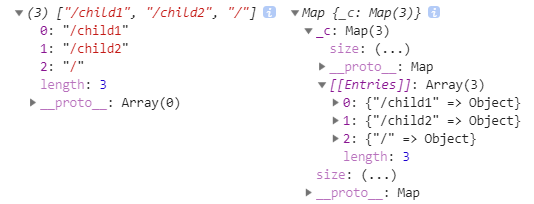

<!DOCTYPE html>
<html>
<head><meta name="generator" content="Hexo 3.8.0">
  <meta charset="utf-8">
  
  <title>手工实现vue-router | 周宇涛的网络日志</title>
  <meta name="viewport" content="width=device-width, initial-scale=1, maximum-scale=1">
  <meta name="description" content="今天是元旦放假的第一天，窝在家里，倍感无聊，所以写下本文。一是想巩固对vue-router的掌握，二是当作记录，方便你我他。">
<meta name="keywords" content="JS,Vue.js,Router">
<meta property="og:type" content="article">
<meta property="og:title" content="手工实现vue-router">
<meta property="og:url" content="https://maczyt.github.io/2018/12/30/手工实现vue-router/index.html">
<meta property="og:site_name" content="周宇涛的网络日志">
<meta property="og:description" content="今天是元旦放假的第一天，窝在家里，倍感无聊，所以写下本文。一是想巩固对vue-router的掌握，二是当作记录，方便你我他。">
<meta property="og:locale" content="default">
<meta property="og:image" content="https://maczyt.github.io/2018/12/30/手工实现vue-router/pathList-map.jpg">
<meta property="og:updated_time" content="2018-12-31T11:53:26.620Z">
<meta name="twitter:card" content="summary">
<meta name="twitter:title" content="手工实现vue-router">
<meta name="twitter:description" content="今天是元旦放假的第一天，窝在家里，倍感无聊，所以写下本文。一是想巩固对vue-router的掌握，二是当作记录，方便你我他。">
<meta name="twitter:image" content="https://maczyt.github.io/2018/12/30/手工实现vue-router/pathList-map.jpg">
  
    <link rel="alternate" href="/atom.xml" title="周宇涛的网络日志" type="application/atom+xml">
  
  
    <link rel="icon" href="/favicon.ico">
  
  
    
  
  <link rel="stylesheet" href="/css/style.css">
  

</head>
</html>
<body>
  <div id="container">
    <div id="wrap">
      <header id="header">
  <div id="banner"></div>
  <div id="header-outer" class="outer">
    
    <div id="header-inner" class="inner">
      <nav id="sub-nav">
        
          <a id="nav-rss-link" class="nav-icon" href="/atom.xml" title="RSS Feed"></a>
        
        <a id="nav-search-btn" class="nav-icon" title="搜索"></a>
      </nav>
      <div id="search-form-wrap">
        <form action="//google.com/search" method="get" accept-charset="UTF-8" class="search-form"><input type="search" name="q" class="search-form-input" placeholder="Search"><button type="submit" class="search-form-submit">&#xF002;</button><input type="hidden" name="sitesearch" value="https://maczyt.github.io"></form>
      </div>
      <nav id="main-nav">
        <a id="main-nav-toggle" class="nav-icon"></a>
        
          <a class="main-nav-link" href="/">首页</a>
        
          <a class="main-nav-link" href="/archives">归档</a>
        
          <a class="main-nav-link" href="/about">关于</a>
        
      </nav>
      
    </div>
    <div id="header-title" class="inner">
      <h1 id="logo-wrap">
        <a href="/" id="logo">周宇涛的网络日志</a>
      </h1>
      
    </div>
  </div>
</header>
      <div class="outer">
        <section id="main"><article id="post-手工实现vue-router" class="article article-type-post" itemscope="" itemprop="blogPost">
  <div class="article-meta">
    <a href="/2018/12/30/手工实现vue-router/" class="article-date">
  <time datetime="2018-12-30T07:02:34.000Z" itemprop="datePublished">2018-12-30</time>
</a>
    
  </div>
  <div class="article-inner">
    
    
      <header class="article-header">
        
  
    <h1 class="article-title" itemprop="name">
      手工实现vue-router
    </h1>
  

      </header>
    
    <div class="article-entry" itemprop="articleBody">
      
        <!-- Table of Contents -->
        
        <p>今天是元旦放假的第一天，窝在家里，倍感无聊，所以写下本文。一是想巩固对<a href="https://router.vuejs.org/" target="_blank" rel="noopener"><code>vue-router</code></a>的掌握，二是当作记录，方便你我他。</p>
<a id="more"></a>
<p>目前工作使用的技术栈是: </p>
<figure class="highlight plain"><table><tr><td class="gutter"><pre><span class="line">1</span><br><span class="line">2</span><br><span class="line">3</span><br><span class="line">4</span><br><span class="line">5</span><br><span class="line">6</span><br></pre></td><td class="code"><pre><span class="line">vue.js: JS框架</span><br><span class="line">vue-router: 路由控制</span><br><span class="line">vuex: 类Flux单向数据流管理</span><br><span class="line">vue-i18n: 国际化</span><br><span class="line">iview: UI组件库</span><br><span class="line">...第三方工具库</span><br></pre></td></tr></table></figure>
<p>可能因为当前业务复杂度一般，所以对<code>vue-router</code>所要求的功能并不是很多，像<code>alias</code>这种重命名就基本没有使用过，所以我只会加入日常工作中使用最多的功能，可以说是官方<code>vue-router</code>的阉割版(如果你对<code>vue-router</code>的更多功能感兴趣，可以在本文的基础上，再查阅官方<code>vue-router</code>的源码)。</p>
<p>在开发我们的<code>vue-router</code>(下面简称<code>router</code>)，我们首先需要了解一下如何开发一个<code>vue</code>插件。</p>
<h2 id="vue插件"><a href="#vue插件" class="headerlink" title="vue插件"></a>vue插件</h2><blockquote>
<p>插件通常会为 Vue 添加全局功能</p>
</blockquote>
<h3 id="使用插件"><a href="#使用插件" class="headerlink" title="使用插件"></a>使用插件</h3><figure class="highlight js"><table><tr><td class="gutter"><pre><span class="line">1</span><br><span class="line">2</span><br></pre></td><td class="code"><pre><span class="line">Vue.use(MyPlugin);</span><br><span class="line"><span class="comment">// Vue.use这个方法，会去调用MyPlugin.install方法</span></span><br></pre></td></tr></table></figure>
<h3 id="开发插件"><a href="#开发插件" class="headerlink" title="开发插件"></a>开发插件</h3><p>从上面的使用来看，我们知道当执行<code>Vue.use(MyPlugin)</code>的时候，会执行<code>MyPlugin.install</code>方法，而这个方法会接受两个参数，一个参数是<code>Vue</code>构造器，第二个参数是一个可选的对象。</p>
<figure class="highlight js"><table><tr><td class="gutter"><pre><span class="line">1</span><br><span class="line">2</span><br><span class="line">3</span><br><span class="line">4</span><br><span class="line">5</span><br><span class="line">6</span><br><span class="line">7</span><br><span class="line">8</span><br><span class="line">9</span><br><span class="line">10</span><br></pre></td><td class="code"><pre><span class="line">MyPlugin.install = <span class="function"><span class="keyword">function</span>(<span class="params">Vue, options</span>) </span>&#123;</span><br><span class="line">  <span class="comment">// 可以使用Vue的方法</span></span><br><span class="line">  <span class="comment">// 例如：mixin</span></span><br><span class="line">  <span class="comment">// 对每个Vue实例的created生命周期注入了console.log</span></span><br><span class="line">  Vue.mixin(&#123;</span><br><span class="line">    created() &#123;</span><br><span class="line">      <span class="built_in">console</span>.log(<span class="string">'use myplugin'</span>);</span><br><span class="line">    &#125;</span><br><span class="line">  &#125;);</span><br><span class="line">&#125;</span><br></pre></td></tr></table></figure>
<p><a href="https://cn.vuejs.org/v2/guide/plugins.html" target="_blank" rel="noopener">了解更多插件知识</a></p>
<p>然后我们再看下官方的<code>vue-router</code>是如何使用的:</p>
<figure class="highlight js"><table><tr><td class="gutter"><pre><span class="line">1</span><br><span class="line">2</span><br><span class="line">3</span><br><span class="line">4</span><br><span class="line">5</span><br><span class="line">6</span><br><span class="line">7</span><br><span class="line">8</span><br><span class="line">9</span><br><span class="line">10</span><br><span class="line">11</span><br><span class="line">12</span><br><span class="line">13</span><br><span class="line">14</span><br><span class="line">15</span><br><span class="line">16</span><br><span class="line">17</span><br><span class="line">18</span><br><span class="line">19</span><br><span class="line">20</span><br><span class="line">21</span><br></pre></td><td class="code"><pre><span class="line"><span class="comment">// router.js</span></span><br><span class="line"><span class="keyword">import</span> Vue <span class="keyword">from</span> <span class="string">'vue'</span>;</span><br><span class="line"><span class="keyword">import</span> VueRouter <span class="keyword">from</span> <span class="string">'vue-router'</span>;</span><br><span class="line"></span><br><span class="line">Vue.use(VueRouter);</span><br><span class="line"></span><br><span class="line"><span class="keyword">const</span> router = <span class="keyword">new</span> VueRouter(&#123;</span><br><span class="line">  routes: [&#123;</span><br><span class="line">    <span class="comment">// xxx</span></span><br><span class="line">  &#125;]</span><br><span class="line">&#125;);</span><br><span class="line"><span class="keyword">export</span> <span class="keyword">default</span> router;</span><br><span class="line"></span><br><span class="line"><span class="comment">// main.js</span></span><br><span class="line"><span class="keyword">import</span> router <span class="keyword">from</span> <span class="string">'./router'</span>;</span><br><span class="line"></span><br><span class="line"><span class="keyword">new</span> Vue(&#123;</span><br><span class="line">  el: <span class="string">'#app'</span>,</span><br><span class="line">  <span class="comment">// ...</span></span><br><span class="line">  router,</span><br><span class="line">&#125;);</span><br></pre></td></tr></table></figure>
<p>那么我们大概可以看出<code>VueRouter</code>是一个含有<code>install</code>属性的构造函数，让我们简单设计一下:</p>
<figure class="highlight js"><table><tr><td class="gutter"><pre><span class="line">1</span><br><span class="line">2</span><br><span class="line">3</span><br><span class="line">4</span><br><span class="line">5</span><br><span class="line">6</span><br></pre></td><td class="code"><pre><span class="line"><span class="class"><span class="keyword">class</span> <span class="title">VueRouter</span> </span>&#123;</span><br><span class="line"></span><br><span class="line">&#125;</span><br><span class="line">VueRouter.install = <span class="function"><span class="keyword">function</span>(<span class="params">Vue</span>) </span>&#123;</span><br><span class="line">  <span class="comment">// xxx</span></span><br><span class="line">&#125;</span><br></pre></td></tr></table></figure>
<p>好，让我们一点一点来补充。Let’s go!</p>
<h2 id="Router构造器"><a href="#Router构造器" class="headerlink" title="Router构造器"></a>Router构造器</h2><p>从官方文档中，Router构造器的构建选项有如下:</p>
<figure class="highlight plain"><table><tr><td class="gutter"><pre><span class="line">1</span><br><span class="line">2</span><br><span class="line">3</span><br><span class="line">4</span><br><span class="line">5</span><br><span class="line">6</span><br><span class="line">7</span><br><span class="line">8</span><br><span class="line">9</span><br><span class="line">10</span><br><span class="line">11</span><br><span class="line">12</span><br><span class="line">13</span><br><span class="line">14</span><br><span class="line">15</span><br><span class="line">16</span><br></pre></td><td class="code"><pre><span class="line">routes: 路由定义配置</span><br><span class="line"></span><br><span class="line">mode: 路由模式(&quot;hash&quot;,&quot;history&quot;,&quot;abstract&quot;), 表示如何检测路由变化, 默认是hash</span><br><span class="line"></span><br><span class="line">base: 基路径(在业务中还没有使用到，一般配置都是服务器直接配置nginx，所以这里将不会展开)</span><br><span class="line"></span><br><span class="line">linkActiveClass: 配合router-link使用，如果当前路由与哪个router-link匹配，将会给匹配的router-link加该class类名</span><br><span class="line"></span><br><span class="line">linkExactActiveClass: 上面的精确匹配版本(在以前使用react-router中接触过exact</span><br><span class="line">比如: &apos;/&apos;, &apos;/hello&apos;, 如果当前路由为&apos;/hello&apos;, 那按理说两个都会匹配到，但是如果设值了exact，则只会匹配&apos;/hello&apos;, 这个业务中也没使用到，将不展开)</span><br><span class="line"></span><br><span class="line">fallback: 回退，如果上面设置的mode在当前环境不支持，并且fallback为true，则会回退到hash</span><br><span class="line"></span><br><span class="line"># 下面目前没有使用到，也不会展开</span><br><span class="line">scrollBehavior: 滚动行为</span><br><span class="line">parseQuery/stringifyQuery: 自定义查询字符串的解析/反解析函数</span><br></pre></td></tr></table></figure>
<p>除了routes我们需要配置外，其它配置项，我们都选择默认值，下面让我们看下一个简单的routes配置项：</p>
<figure class="highlight js"><table><tr><td class="gutter"><pre><span class="line">1</span><br><span class="line">2</span><br><span class="line">3</span><br><span class="line">4</span><br><span class="line">5</span><br><span class="line">6</span><br><span class="line">7</span><br><span class="line">8</span><br><span class="line">9</span><br><span class="line">10</span><br><span class="line">11</span><br><span class="line">12</span><br><span class="line">13</span><br><span class="line">14</span><br><span class="line">15</span><br><span class="line">16</span><br><span class="line">17</span><br><span class="line">18</span><br><span class="line">19</span><br><span class="line">20</span><br><span class="line">21</span><br><span class="line">22</span><br><span class="line">23</span><br><span class="line">24</span><br><span class="line">25</span><br><span class="line">26</span><br><span class="line">27</span><br><span class="line">28</span><br><span class="line">29</span><br><span class="line">30</span><br><span class="line">31</span><br><span class="line">32</span><br><span class="line">33</span><br><span class="line">34</span><br></pre></td><td class="code"><pre><span class="line"><span class="comment">/* Vue组件 start */</span></span><br><span class="line"><span class="keyword">const</span> App = &#123;</span><br><span class="line">  template: <span class="string">`</span></span><br><span class="line"><span class="string">    &lt;div&gt;</span></span><br><span class="line"><span class="string">      &lt;h1&gt;App&lt;/h1&gt;</span></span><br><span class="line"><span class="string">      &lt;ul&gt;</span></span><br><span class="line"><span class="string">        &lt;li&gt;&lt;router-link to="/child1"&gt;child1 link&lt;/router-link&gt;&lt;/li&gt;</span></span><br><span class="line"><span class="string">        &lt;li&gt;&lt;router-link to="/child2"&gt;child2 link&lt;/router-link&gt;&lt;/li&gt;</span></span><br><span class="line"><span class="string">      &lt;/ul&gt;</span></span><br><span class="line"><span class="string">      &lt;br /&gt;</span></span><br><span class="line"><span class="string">      &lt;router-view /&gt;</span></span><br><span class="line"><span class="string">    &lt;/div&gt;</span></span><br><span class="line"><span class="string">  `</span>,</span><br><span class="line">&#125;;</span><br><span class="line"><span class="keyword">const</span> Child1 = &#123;</span><br><span class="line">  template: <span class="string">'&lt;h2&gt;child1&lt;/h2&gt;'</span>,</span><br><span class="line">&#125;;</span><br><span class="line"><span class="keyword">const</span> Child2 = &#123;</span><br><span class="line">  template: <span class="string">'&lt;h2&gt;child2&lt;/h2&gt;'</span>,</span><br><span class="line">&#125;;</span><br><span class="line"><span class="comment">/* Vue组件 end */</span></span><br><span class="line"></span><br><span class="line"><span class="comment">// 这里我们不会处理name字段</span></span><br><span class="line"><span class="keyword">const</span> routes = [&#123;</span><br><span class="line">  path: <span class="string">'/'</span>,</span><br><span class="line">  component: App,</span><br><span class="line">  children: [&#123;</span><br><span class="line">    path: <span class="string">'child1'</span>,</span><br><span class="line">    component: Child1,</span><br><span class="line">  &#125;, &#123;</span><br><span class="line">    path: <span class="string">'/child2'</span>,</span><br><span class="line">    component: Child2,</span><br><span class="line">  &#125;]</span><br><span class="line">&#125;]</span><br></pre></td></tr></table></figure>
<p>上面，我们定义了三个路由，一个是根路由，两个子路由。不知道大家有没有发现两个子路由有<em>一点点不同</em>，它们的<strong>path一个是以’/‘开头</strong>，另一个而不是，这样做有什么区别呢？<br>不急，请继续往下看。</p>
<p>让我们对上面设计的VueRouter类，加点东西</p>
<figure class="highlight js"><table><tr><td class="gutter"><pre><span class="line">1</span><br><span class="line">2</span><br><span class="line">3</span><br><span class="line">4</span><br><span class="line">5</span><br><span class="line">6</span><br><span class="line">7</span><br><span class="line">8</span><br><span class="line">9</span><br><span class="line">10</span><br><span class="line">11</span><br><span class="line">12</span><br><span class="line">13</span><br><span class="line">14</span><br><span class="line">15</span><br><span class="line">16</span><br><span class="line">17</span><br><span class="line">18</span><br><span class="line">19</span><br><span class="line">20</span><br><span class="line">21</span><br><span class="line">22</span><br></pre></td><td class="code"><pre><span class="line"><span class="class"><span class="keyword">class</span> <span class="title">VueRouter</span> </span>&#123;</span><br><span class="line">  <span class="keyword">constructor</span>(options) &#123;</span><br><span class="line">    <span class="comment">// 同上所述，这里其他配置选择默认值</span></span><br><span class="line">    <span class="keyword">const</span> &#123; routes &#125; = options;</span><br><span class="line">    <span class="comment">// 这个app指向Vue根实例，可以关注下，为何要绑定到Router实例上</span></span><br><span class="line">    <span class="keyword">this</span>.app = <span class="literal">null</span>; </span><br><span class="line">    <span class="keyword">this</span>._options = options;</span><br><span class="line">  &#125;</span><br><span class="line"></span><br><span class="line">  <span class="comment">// 初始化方法</span></span><br><span class="line">  init(vm) &#123;</span><br><span class="line">    <span class="keyword">this</span>.app = vm;</span><br><span class="line">    <span class="keyword">this</span>._matcher = createMatcher(<span class="keyword">this</span>._options.routes);</span><br><span class="line">  &#125;</span><br><span class="line"></span><br><span class="line">  <span class="comment">// 操作路由的方法</span></span><br><span class="line">  go(n) &#123;&#125;</span><br><span class="line">  back() &#123;&#125;</span><br><span class="line">  forward() &#123;&#125;</span><br><span class="line">  push(location) &#123;&#125;</span><br><span class="line">  replace(location) &#123;&#125;</span><br><span class="line">&#125;</span><br></pre></td></tr></table></figure>
<p>由<code>createMatcher</code>方法知道，<code>vue-router</code>会把我们配置的<code>routes</code>进行一个<code>hash</code>指向处理，简单的说，就是一个通过设置的<code>path</code>可以获取当前路由对象的<code>hash</code>算法。</p>
<h3 id="routes-gt-route对象"><a href="#routes-gt-route对象" class="headerlink" title="routes -&gt; route对象"></a>routes -&gt; route对象</h3><p>这里参考下官方，创建<code>createMatcher</code>方法进行转换处理。</p>
<figure class="highlight js"><table><tr><td class="gutter"><pre><span class="line">1</span><br><span class="line">2</span><br><span class="line">3</span><br><span class="line">4</span><br><span class="line">5</span><br><span class="line">6</span><br><span class="line">7</span><br><span class="line">8</span><br><span class="line">9</span><br><span class="line">10</span><br><span class="line">11</span><br><span class="line">12</span><br><span class="line">13</span><br><span class="line">14</span><br><span class="line">15</span><br><span class="line">16</span><br><span class="line">17</span><br><span class="line">18</span><br><span class="line">19</span><br><span class="line">20</span><br><span class="line">21</span><br><span class="line">22</span><br><span class="line">23</span><br><span class="line">24</span><br><span class="line">25</span><br><span class="line">26</span><br><span class="line">27</span><br><span class="line">28</span><br><span class="line">29</span><br><span class="line">30</span><br><span class="line">31</span><br><span class="line">32</span><br><span class="line">33</span><br><span class="line">34</span><br><span class="line">35</span><br><span class="line">36</span><br><span class="line">37</span><br><span class="line">38</span><br><span class="line">39</span><br><span class="line">40</span><br><span class="line">41</span><br><span class="line">42</span><br><span class="line">43</span><br><span class="line">44</span><br><span class="line">45</span><br><span class="line">46</span><br><span class="line">47</span><br><span class="line">48</span><br><span class="line">49</span><br><span class="line">50</span><br><span class="line">51</span><br><span class="line">52</span><br><span class="line">53</span><br><span class="line">54</span><br><span class="line">55</span><br><span class="line">56</span><br><span class="line">57</span><br><span class="line">58</span><br><span class="line">59</span><br><span class="line">60</span><br><span class="line">61</span><br><span class="line">62</span><br><span class="line">63</span><br><span class="line">64</span><br><span class="line">65</span><br><span class="line">66</span><br><span class="line">67</span><br><span class="line">68</span><br><span class="line">69</span><br><span class="line">70</span><br><span class="line">71</span><br><span class="line">72</span><br><span class="line">73</span><br><span class="line">74</span><br><span class="line">75</span><br><span class="line">76</span><br><span class="line">77</span><br><span class="line">78</span><br><span class="line">79</span><br><span class="line">80</span><br><span class="line">81</span><br><span class="line">82</span><br><span class="line">83</span><br><span class="line">84</span><br><span class="line">85</span><br><span class="line">86</span><br><span class="line">87</span><br></pre></td><td class="code"><pre><span class="line"><span class="function"><span class="keyword">function</span> <span class="title">createMatcher</span>(<span class="params">routes</span>) </span>&#123;</span><br><span class="line">  <span class="comment">// 收集path，便于指向match方法的时候遍历  -&gt; 列表便于遍历</span></span><br><span class="line">  <span class="keyword">const</span> pathList = [];</span><br><span class="line">  <span class="comment">// key为path，value为route对象，便于存取  -&gt; hash对象便于存取</span></span><br><span class="line">  <span class="keyword">const</span> pathMap = <span class="keyword">new</span> <span class="built_in">Map</span>();</span><br><span class="line"></span><br><span class="line">  routes.forEach(<span class="function"><span class="params">route</span> =&gt;</span> &#123;</span><br><span class="line">    routeToRecord(pathList, pathMap, route);</span><br><span class="line">  &#125;);</span><br><span class="line">  <span class="comment">/**</span></span><br><span class="line"><span class="comment">   * 当我们监测到路由发生变化，我们把当前location</span></span><br><span class="line"><span class="comment">   * 传进来，看是否有匹配的路由对象</span></span><br><span class="line"><span class="comment">   */</span></span><br><span class="line">  <span class="function"><span class="keyword">function</span> <span class="title">match</span>(<span class="params">location</span>) </span>&#123;</span><br><span class="line">    <span class="keyword">for</span> (<span class="keyword">const</span> path <span class="keyword">of</span> pathList) &#123;</span><br><span class="line">      <span class="keyword">if</span> (path <span class="string">'匹配'</span> location) &#123;</span><br><span class="line">        <span class="keyword">const</span> record = pathMap.get(path);</span><br><span class="line">        <span class="comment">// 这里我们需要处理下，因为这个record可能是一个子路由，我们需要把它的父获取到</span></span><br><span class="line">        <span class="comment">// 因为我们处理router-view组件的时候需要渲染使用， 这里不清楚没关系，不急.</span></span><br><span class="line">        <span class="keyword">return</span> &#123;</span><br><span class="line">          meta: record.meta,</span><br><span class="line">          path: record.path || <span class="string">'/'</span>,</span><br><span class="line">          hash: record.hash || <span class="string">''</span>,</span><br><span class="line">          <span class="comment">// 非常重要</span></span><br><span class="line">          matched: formatMatch(record),</span><br><span class="line">          <span class="comment">// query: 这里就不多说了</span></span><br><span class="line">        &#125;</span><br><span class="line">      &#125;</span><br><span class="line">    &#125;</span><br><span class="line">    <span class="comment">// 说明没有匹配到路由，用户友好就可以展示404</span></span><br><span class="line">    <span class="keyword">return</span> <span class="literal">null</span>;</span><br><span class="line">  &#125;</span><br><span class="line"></span><br><span class="line">  <span class="comment">// 这里大概讲下, 比如，我们匹配到路由/child2,</span></span><br><span class="line">  <span class="comment">// 这个时候，我们会得到[App的record, child2的record]</span></span><br><span class="line">  <span class="comment">// 这是因为我们有两个router-view需要渲染，也就是处于第几层路由，如果匹配到了，说明就会有对应几个</span></span><br><span class="line">  <span class="comment">// router-view组件需要渲染，如果只返回当前record，那其他的router-view就无法渲染出来，从而导致页面出问题</span></span><br><span class="line">  <span class="comment">// 这里大家可以细细品味下</span></span><br><span class="line">  <span class="function"><span class="keyword">function</span> <span class="title">formatMatch</span>(<span class="params">record</span>) </span>&#123;</span><br><span class="line">    <span class="keyword">const</span> res = [];</span><br><span class="line">    <span class="keyword">while</span> (record) &#123;</span><br><span class="line">      res.unshift(record);</span><br><span class="line">      record = record.parent;</span><br><span class="line">    &#125;</span><br><span class="line">    <span class="keyword">return</span> res;</span><br><span class="line">  &#125;</span><br><span class="line"></span><br><span class="line">  <span class="keyword">return</span> &#123;</span><br><span class="line">    match,</span><br><span class="line">  &#125;</span><br><span class="line">&#125;</span><br><span class="line"></span><br><span class="line"><span class="function"><span class="keyword">function</span> <span class="title">routeToRecord</span>(<span class="params">pathList, pathMap, route, parent</span>) </span>&#123;</span><br><span class="line">  <span class="keyword">const</span> &#123; path &#125; = route;</span><br><span class="line">  <span class="comment">// 还记得上面我们定义的两个子路由吗</span></span><br><span class="line">  <span class="comment">// 如果路由的path是以'/'开头的，那么它的匹配path就不需要再拼接parent的path了</span></span><br><span class="line">  <span class="keyword">const</span> normalizedPath = path.startsWith(<span class="string">'/'</span>) ? path : <span class="string">`<span class="subst">$&#123;parent.path&#125;</span>/<span class="subst">$&#123;path&#125;</span>`</span>;</span><br><span class="line">  <span class="keyword">const</span> record = &#123;</span><br><span class="line">    <span class="comment">// 这里我们使用了path-to-regexp库来处理path匹配</span></span><br><span class="line">    regex: PathToRegexp(normalizedPath, []),</span><br><span class="line">    path: normalizedPath,</span><br><span class="line">    <span class="comment">// 这里我们了解到，如果我们只定义component，也会被处理到components中</span></span><br><span class="line">    <span class="comment">// 这是为了在同一个路由下，能通过不同的name渲染router-view</span></span><br><span class="line">    <span class="comment">// 如果我们不给router-view传name则默认渲染default</span></span><br><span class="line">    components: route.components || &#123;</span><br><span class="line">      <span class="keyword">default</span>: route.component,</span><br><span class="line">    &#125;,</span><br><span class="line">    <span class="comment">// 非常重要</span></span><br><span class="line">    parent,</span><br><span class="line">    meta: route.meta || &#123;&#125;,</span><br><span class="line">  &#125;;</span><br><span class="line"></span><br><span class="line">  <span class="comment">// 和vue.js 1.0处理指令元素一样</span></span><br><span class="line">  <span class="comment">// 使用深度优先遍历</span></span><br><span class="line">  <span class="keyword">if</span> (route.children) &#123;</span><br><span class="line">    route.children.forEach(<span class="function"><span class="params">child</span> =&gt;</span> &#123;</span><br><span class="line">      routeToRecord(pathList, pathMap, child, record);</span><br><span class="line">    &#125;)</span><br><span class="line">  &#125;</span><br><span class="line"></span><br><span class="line">  <span class="comment">// 说明，如果我们重复定义相同的path，只会处理第一个</span></span><br><span class="line">  <span class="comment">// 这个使用pathMap.has是用了hash便于搜索的优势</span></span><br><span class="line">  <span class="keyword">if</span> (!pathMap.has(record.path)) &#123;</span><br><span class="line">    pathList.push(record.path);</span><br><span class="line">    pathMap.set(record.path, record);</span><br><span class="line">  &#125;</span><br><span class="line">&#125;</span><br></pre></td></tr></table></figure>
<p>现在我们收集了<code>routes</code>配置，让我们看下当前<code>pathList</code>和<code>pathMap</code>:</p>
<p></p>
<p>这里我们已经完成了<code>routes</code>配置 -&gt; <code>pathList</code>, <code>pathMap</code>, 下面我们看看如何匹配路由的。</p>
<h3 id="匹配路由"><a href="#匹配路由" class="headerlink" title="匹配路由"></a>匹配路由</h3><blockquote>
<p>这里，我们使用了第三方库<a href="https://www.npmjs.com/package/history" target="_blank" rel="noopener">history</a>，用来对路由进行监测管理。</p>
</blockquote>
<p>在<code>VueRouter</code>类的<code>init</code>方法中，我们加入代码</p>
<figure class="highlight js"><table><tr><td class="gutter"><pre><span class="line">1</span><br><span class="line">2</span><br><span class="line">3</span><br><span class="line">4</span><br><span class="line">5</span><br><span class="line">6</span><br><span class="line">7</span><br><span class="line">8</span><br><span class="line">9</span><br><span class="line">10</span><br><span class="line">11</span><br><span class="line">12</span><br><span class="line">13</span><br><span class="line">14</span><br><span class="line">15</span><br></pre></td><td class="code"><pre><span class="line">init() &#123;</span><br><span class="line">  <span class="comment">// xxx</span></span><br><span class="line"></span><br><span class="line">  <span class="keyword">this</span>._history = history.createHashHistory(); <span class="comment">// mode为hash</span></span><br><span class="line">  <span class="comment">// 因为一进来，是不会执行listen的回调的，所以我们需要手动设置当前location</span></span><br><span class="line">  <span class="keyword">const</span> location = <span class="keyword">this</span>._history.location;</span><br><span class="line">  <span class="comment">// 匹配获取路由对象</span></span><br><span class="line">  <span class="keyword">const</span> match = <span class="keyword">this</span>._matcher.match(location);</span><br><span class="line">  <span class="comment">// 这里挂载到Vue根实例上，每个Vue实例上的$route便是此</span></span><br><span class="line">  <span class="keyword">this</span>.app._route = match;</span><br><span class="line">  <span class="keyword">this</span>._history.listen(<span class="function">(<span class="params">location</span>) =&gt;</span> &#123;</span><br><span class="line">    <span class="keyword">const</span> match = <span class="keyword">this</span>._matcher.match(location);</span><br><span class="line">    <span class="keyword">this</span>.app._route = match;  </span><br><span class="line">  &#125;);</span><br><span class="line">&#125;</span><br></pre></td></tr></table></figure>
<h3 id="Vue实例属性"><a href="#Vue实例属性" class="headerlink" title="Vue实例属性"></a>Vue实例属性</h3><p>让我们来补充下<code>install</code>方法</p>
<figure class="highlight js"><table><tr><td class="gutter"><pre><span class="line">1</span><br><span class="line">2</span><br><span class="line">3</span><br><span class="line">4</span><br><span class="line">5</span><br><span class="line">6</span><br><span class="line">7</span><br><span class="line">8</span><br><span class="line">9</span><br><span class="line">10</span><br><span class="line">11</span><br><span class="line">12</span><br><span class="line">13</span><br><span class="line">14</span><br><span class="line">15</span><br><span class="line">16</span><br><span class="line">17</span><br><span class="line">18</span><br><span class="line">19</span><br><span class="line">20</span><br><span class="line">21</span><br><span class="line">22</span><br><span class="line">23</span><br><span class="line">24</span><br><span class="line">25</span><br><span class="line">26</span><br><span class="line">27</span><br><span class="line">28</span><br><span class="line">29</span><br><span class="line">30</span><br><span class="line">31</span><br><span class="line">32</span><br><span class="line">33</span><br><span class="line">34</span><br><span class="line">35</span><br><span class="line">36</span><br><span class="line">37</span><br><span class="line">38</span><br><span class="line">39</span><br></pre></td><td class="code"><pre><span class="line"><span class="keyword">let</span> Vue;</span><br><span class="line"></span><br><span class="line"><span class="function"><span class="keyword">function</span> <span class="title">install</span>(<span class="params">_Vue</span>) </span>&#123;</span><br><span class="line">  <span class="comment">// 避免执行多次Vue.use</span></span><br><span class="line">  <span class="keyword">if</span> (Vue &amp;&amp; Vue === _Vue) &#123;</span><br><span class="line">    <span class="keyword">return</span>;</span><br><span class="line">  &#125;</span><br><span class="line">  Vue = _Vue;</span><br><span class="line">  Vue.mixin(&#123;</span><br><span class="line">    beforeCreate() &#123;</span><br><span class="line">      <span class="keyword">const</span> options = <span class="keyword">this</span>.$options;</span><br><span class="line">      <span class="keyword">if</span> (options.router) &#123;</span><br><span class="line">        <span class="keyword">this</span>._routerRoot = <span class="keyword">this</span>;</span><br><span class="line">        <span class="keyword">this</span>._router = options.router;</span><br><span class="line">        <span class="comment">// reactive</span></span><br><span class="line">        Vue.util.defineReactive(<span class="keyword">this</span>, <span class="string">'_route'</span>, &#123;&#125;);</span><br><span class="line">        <span class="comment">// 调用VueRouter的init，开始路由工作</span></span><br><span class="line">        <span class="keyword">this</span>._router.init(<span class="keyword">this</span>);</span><br><span class="line">      &#125; <span class="keyword">else</span> &#123;</span><br><span class="line">        <span class="keyword">this</span>._routerRoot = (<span class="keyword">this</span>.$parent &amp;&amp; <span class="keyword">this</span>.$parent._routerRoot) || <span class="keyword">this</span>;</span><br><span class="line">      &#125;</span><br><span class="line">    &#125;,</span><br><span class="line">  &#125;);</span><br><span class="line"></span><br><span class="line">  <span class="comment">// 这里有点不清楚，为什么$route就可以在devtools中显示，而$router却不显示</span></span><br><span class="line">  <span class="built_in">Object</span>.defineProperty(Vue.prototype, <span class="string">'$router'</span>, &#123;</span><br><span class="line">    get() &#123;</span><br><span class="line">      <span class="keyword">return</span> <span class="keyword">this</span>._routerRoot._router;</span><br><span class="line">    &#125;</span><br><span class="line">  &#125;);</span><br><span class="line">  <span class="built_in">Object</span>.defineProperty(Vue.prototype, <span class="string">'$route'</span>, &#123;</span><br><span class="line">    get() &#123;</span><br><span class="line">      <span class="keyword">return</span> <span class="keyword">this</span>._routerRoot._route;</span><br><span class="line">    &#125;</span><br><span class="line">  &#125;);</span><br><span class="line">  <span class="comment">// 注册组件</span></span><br><span class="line">  Vue.component(<span class="string">'RouterLink'</span>, RouterLink);</span><br><span class="line">  Vue.component(<span class="string">'RouteView'</span>, RouterView);</span><br><span class="line">&#125;</span><br></pre></td></tr></table></figure>
<p>这里我们算是完成万里长征的一半，剩下的一半即是我们的两个组件。</p>
<h2 id="link和view组件"><a href="#link和view组件" class="headerlink" title="link和view组件"></a>link和view组件</h2><p>首先，来个简单的<code>link</code>组件<br><code>link</code>组件，我们知道就是渲染我们传进去的子内容，并且点击会跳转到我们指导的<code>to</code>。</p>
<p>说实话，回想当前所从事工作业务中，<code>link</code>组件基本没有用过，都是通过<code>push</code>,<code>replace</code>等动态方法来操作路由。</p>
<h3 id="link组件"><a href="#link组件" class="headerlink" title="link组件"></a>link组件</h3><figure class="highlight html"><table><tr><td class="gutter"><pre><span class="line">1</span><br><span class="line">2</span><br><span class="line">3</span><br><span class="line">4</span><br><span class="line">5</span><br><span class="line">6</span><br><span class="line">7</span><br><span class="line">8</span><br><span class="line">9</span><br><span class="line">10</span><br><span class="line">11</span><br><span class="line">12</span><br><span class="line">13</span><br><span class="line">14</span><br><span class="line">15</span><br><span class="line">16</span><br><span class="line">17</span><br><span class="line">18</span><br><span class="line">19</span><br><span class="line">20</span><br><span class="line">21</span><br><span class="line">22</span><br><span class="line">23</span><br><span class="line">24</span><br><span class="line">25</span><br><span class="line">26</span><br><span class="line">27</span><br></pre></td><td class="code"><pre><span class="line"><span class="tag">&lt;<span class="name">template</span>&gt;</span></span><br><span class="line">  <span class="tag">&lt;<span class="name">component</span> @<span class="attr">click</span>=<span class="string">"onClick"</span> <span class="attr">:is</span>=<span class="string">"tag"</span> <span class="attr">:href</span>=<span class="string">"to"</span>&gt;</span></span><br><span class="line">    <span class="tag">&lt;<span class="name">slot</span> /&gt;</span></span><br><span class="line">  <span class="tag">&lt;/<span class="name">component</span>&gt;</span></span><br><span class="line"><span class="tag">&lt;/<span class="name">template</span>&gt;</span></span><br><span class="line"></span><br><span class="line"><span class="tag">&lt;<span class="name">script</span>&gt;</span><span class="undefined"></span></span><br><span class="line"><span class="javascript"><span class="keyword">export</span> <span class="keyword">default</span> &#123;</span></span><br><span class="line"><span class="javascript">  name: <span class="string">"router-link"</span>,</span></span><br><span class="line"><span class="undefined">  props: &#123;</span></span><br><span class="line"><span class="undefined">    to: &#123;</span></span><br><span class="line"><span class="javascript">      type: <span class="built_in">String</span>,</span></span><br><span class="line"><span class="javascript">      required: <span class="literal">true</span></span></span><br><span class="line"><span class="undefined">    &#125;,</span></span><br><span class="line"><span class="undefined">    tag: &#123;</span></span><br><span class="line"><span class="javascript">      type: <span class="built_in">String</span>,</span></span><br><span class="line"><span class="javascript">      <span class="keyword">default</span>: <span class="string">"a"</span></span></span><br><span class="line"><span class="undefined">    &#125;</span></span><br><span class="line"><span class="undefined">  &#125;,</span></span><br><span class="line"><span class="undefined">  methods: &#123;</span></span><br><span class="line"><span class="undefined">    onClick(event) &#123;</span></span><br><span class="line"><span class="undefined">      event.preventDefault();</span></span><br><span class="line"><span class="javascript">      <span class="keyword">this</span>.$router.push(<span class="keyword">this</span>.to);</span></span><br><span class="line"><span class="undefined">    &#125;</span></span><br><span class="line"><span class="undefined">  &#125;</span></span><br><span class="line"><span class="undefined">&#125;;</span></span><br><span class="line"><span class="undefined"></span><span class="tag">&lt;/<span class="name">script</span>&gt;</span></span><br></pre></td></tr></table></figure>
<p>本文最后的大头，<code>view</code>组件，工作机制，就是与匹配到的路由对象，渲染其的<code>components</code></p>
<h3 id="view组件"><a href="#view组件" class="headerlink" title="view组件"></a>view组件</h3><figure class="highlight html"><table><tr><td class="gutter"><pre><span class="line">1</span><br><span class="line">2</span><br><span class="line">3</span><br><span class="line">4</span><br><span class="line">5</span><br><span class="line">6</span><br><span class="line">7</span><br><span class="line">8</span><br><span class="line">9</span><br><span class="line">10</span><br><span class="line">11</span><br><span class="line">12</span><br><span class="line">13</span><br><span class="line">14</span><br><span class="line">15</span><br><span class="line">16</span><br><span class="line">17</span><br><span class="line">18</span><br><span class="line">19</span><br><span class="line">20</span><br><span class="line">21</span><br><span class="line">22</span><br><span class="line">23</span><br><span class="line">24</span><br><span class="line">25</span><br><span class="line">26</span><br><span class="line">27</span><br><span class="line">28</span><br><span class="line">29</span><br><span class="line">30</span><br><span class="line">31</span><br><span class="line">32</span><br><span class="line">33</span><br><span class="line">34</span><br><span class="line">35</span><br><span class="line">36</span><br><span class="line">37</span><br><span class="line">38</span><br><span class="line">39</span><br><span class="line">40</span><br><span class="line">41</span><br><span class="line">42</span><br><span class="line">43</span><br><span class="line">44</span><br><span class="line">45</span><br><span class="line">46</span><br><span class="line">47</span><br><span class="line">48</span><br><span class="line">49</span><br><span class="line">50</span><br><span class="line">51</span><br><span class="line">52</span><br><span class="line">53</span><br><span class="line">54</span><br><span class="line">55</span><br></pre></td><td class="code"><pre><span class="line"><span class="comment">&lt;!-- 官方的view是functional组件，为了更加友好，我使用单文件模式 --&gt;</span></span><br><span class="line"><span class="tag">&lt;<span class="name">template</span>&gt;</span></span><br><span class="line">  <span class="tag">&lt;<span class="name">component</span> <span class="attr">v-bind:is</span>=<span class="string">"renderComponent"</span>&gt;</span><span class="tag">&lt;/<span class="name">component</span>&gt;</span></span><br><span class="line"><span class="tag">&lt;/<span class="name">template</span>&gt;</span></span><br><span class="line"></span><br><span class="line"><span class="tag">&lt;<span class="name">script</span>&gt;</span><span class="undefined"></span></span><br><span class="line"><span class="javascript"><span class="keyword">export</span> <span class="keyword">default</span> &#123;</span></span><br><span class="line"><span class="javascript">  name: <span class="string">"router-view"</span>,</span></span><br><span class="line"><span class="undefined">  data() &#123;</span></span><br><span class="line"><span class="javascript">    <span class="keyword">return</span> &#123;</span></span><br><span class="line"><span class="javascript">      routerView: <span class="literal">true</span>,</span></span><br><span class="line"><span class="javascript">      renderComponent: <span class="literal">null</span></span></span><br><span class="line"><span class="undefined">    &#125;;</span></span><br><span class="line"><span class="undefined">  &#125;,</span></span><br><span class="line"><span class="undefined">  props: &#123;</span></span><br><span class="line"><span class="undefined">    name: &#123;</span></span><br><span class="line"><span class="javascript">      type: <span class="built_in">String</span>,</span></span><br><span class="line"><span class="javascript">      <span class="keyword">default</span>: <span class="string">"default"</span> <span class="comment">// 默认渲染components.default</span></span></span><br><span class="line"><span class="undefined">    &#125;</span></span><br><span class="line"><span class="undefined">  &#125;,</span></span><br><span class="line"><span class="undefined">  created() &#123;</span></span><br><span class="line"><span class="javascript">    <span class="keyword">this</span>.handleRender();</span></span><br><span class="line"><span class="undefined">  &#125;,</span></span><br><span class="line"><span class="undefined">  methods: &#123;</span></span><br><span class="line"><span class="undefined">    handleRender() &#123;</span></span><br><span class="line"><span class="javascript">      <span class="keyword">let</span> parent = <span class="keyword">this</span>.$parent;</span></span><br><span class="line"><span class="undefined"></span></span><br><span class="line"><span class="javascript">      <span class="comment">// 匹配matched中的第几个，这也就是我们为什么要把父路由存到matched中</span></span></span><br><span class="line"><span class="javascript">      <span class="keyword">let</span> depth = <span class="number">0</span>;</span></span><br><span class="line"><span class="javascript">      <span class="comment">// 从当前组件一直遍历处理到根组件</span></span></span><br><span class="line"><span class="javascript">      <span class="keyword">while</span> (parent &amp;&amp; parent._routerRoot !== parent) &#123;</span></span><br><span class="line"><span class="javascript">        <span class="keyword">if</span> (parent.routerView) &#123;</span></span><br><span class="line"><span class="undefined">          depth++;</span></span><br><span class="line"><span class="undefined">        &#125;</span></span><br><span class="line"><span class="undefined">        parent = parent.$parent;</span></span><br><span class="line"><span class="undefined">      &#125;</span></span><br><span class="line"><span class="undefined"></span></span><br><span class="line"><span class="javascript">      <span class="keyword">try</span> &#123;</span></span><br><span class="line"><span class="javascript">        <span class="keyword">const</span> route = <span class="keyword">this</span>.$route;</span></span><br><span class="line"><span class="javascript">        <span class="keyword">const</span> match = route.matched[depth];</span></span><br><span class="line"><span class="javascript">        <span class="keyword">const</span> components = match.components;</span></span><br><span class="line"><span class="javascript">        <span class="keyword">const</span> component = components[<span class="keyword">this</span>.name];</span></span><br><span class="line"><span class="javascript">        <span class="keyword">this</span>.renderComponent = component;</span></span><br><span class="line"><span class="javascript">      &#125; <span class="keyword">catch</span> (e) &#123;</span></span><br><span class="line"><span class="javascript">        <span class="keyword">this</span>.renderComponent = <span class="literal">null</span>;</span></span><br><span class="line"><span class="undefined">      &#125;</span></span><br><span class="line"><span class="undefined">    &#125;</span></span><br><span class="line"><span class="undefined">  &#125;,</span></span><br><span class="line"><span class="undefined">  watch: &#123;</span></span><br><span class="line"><span class="undefined">    $route() &#123;</span></span><br><span class="line"><span class="javascript">      <span class="keyword">this</span>.handleRender();</span></span><br><span class="line"><span class="undefined">    &#125;</span></span><br><span class="line"><span class="undefined">  &#125;</span></span><br><span class="line"><span class="undefined">&#125;;</span></span><br><span class="line"><span class="undefined"></span><span class="tag">&lt;/<span class="name">script</span>&gt;</span></span><br></pre></td></tr></table></figure>
<p>Ok, 这样我们就拥有了一个阉割版的<code>vue-router</code>，但是我们还有很多没有做，比如路由拦截钩子，路由生命周期钩子等。</p>
<h2 id="最后"><a href="#最后" class="headerlink" title="最后"></a>最后</h2><p>因为能力有限，难免有不足之处，如果你发现了，还请指出，谢谢。</p>
<h2 id="参考代码"><a href="#参考代码" class="headerlink" title="参考代码"></a><a href="https://github.com/maczyt/vue-router-alike" target="_blank" rel="noopener">参考代码</a></h2><h2 id="ToDo"><a href="#ToDo" class="headerlink" title="ToDo"></a>ToDo</h2><ol>
<li><code>beforeEach</code></li>
<li><code>afterEach</code></li>
<li>支持缓存 - <code>keep-alive</code></li>
<li><code>link: linkActiveClass</code></li>
<li><code>mode: history</code></li>
</ol>

      
    </div>
    <footer class="article-footer">
      <a data-url="https://maczyt.github.io/2018/12/30/手工实现vue-router/" data-id="cjy1dzn0u0018ocvvpe2xpdpj" class="article-share-link">分享</a>
      
      
      
  <ul class="article-tag-list"><li class="article-tag-list-item"><a class="article-tag-list-link" href="/tags/JS/">JS</a></li><li class="article-tag-list-item"><a class="article-tag-list-link" href="/tags/Router/">Router</a></li><li class="article-tag-list-item"><a class="article-tag-list-link" href="/tags/Vue-js/">Vue.js</a></li></ul>

    </footer>
  </div>
  
    
 <script src="/jquery/jquery.min.js"></script>
  <div id="random_posts">
    <h2>推荐文章</h2>
    <div class="random_posts_ul">
      <script>
          var random_count =4
          var site = {BASE_URI:'/'};
          function load_random_posts(obj) {
              var arr=site.posts;
              if (!obj) return;
              // var count = $(obj).attr('data-count') || 6;
              for (var i, tmp, n = arr.length; n; i = Math.floor(Math.random() * n), tmp = arr[--n], arr[n] = arr[i], arr[i] = tmp);
              arr = arr.slice(0, random_count);
              var html = '<ul>';
            
              for(var j=0;j<arr.length;j++){
                var item=arr[j];
                html += '<li><strong>' + 
                item.date + ':&nbsp;&nbsp;<a href="' + (site.BASE_URI+item.uri) + '">' + 
                (item.title || item.uri) + '</a></strong>';
                if(item.excerpt){
                  html +='<div class="post-excerpt">'+item.excerpt+'</div>';
                }
                html +='</li>';
                
              }
              $(obj).html(html + '</ul>');
          }
          $('.random_posts_ul').each(function () {
              var c = this;
              if (!site.posts || !site.posts.length){
                  $.getJSON(site.BASE_URI + 'js/posts.js',function(json){site.posts = json;load_random_posts(c)});
              } 
               else{
                load_random_posts(c);
              }
          });
      </script>
    </div>
  </div>

    
<nav id="article-nav">
  
    <a href="/2019/01/14/从microTask、macroTask到async-await简单了解/" id="article-nav-newer" class="article-nav-link-wrap">
      <strong class="article-nav-caption">上一篇</strong>
      <div class="article-nav-title">
        
          从microTask、macroTask到async-await简单了解
        
      </div>
    </a>
  
  
    <a href="/2018/12/29/JS中Deep-Clone的几种方式/" id="article-nav-older" class="article-nav-link-wrap">
      <strong class="article-nav-caption">下一篇</strong>
      <div class="article-nav-title">JS中Deep Clone的几种方式</div>
    </a>
  
</nav>

  
</article>
 
     
  <div class="comments" id="comments">
    
     
       
      <div id="cloud-tie-wrapper" class="cloud-tie-wrapper"></div>
    
       
      
      
           <div id="gitment_comments"></div>
    
  </div>
 
  

</section>
           
    <aside id="sidebar">
  
    

  
    
    <div class="widget-wrap">
    
      <div class="widget" id="toc-widget-fixed">
      
        <strong class="toc-title">文章目录</strong>
        <div class="toc-widget-list">
              <ol class="toc"><li class="toc-item toc-level-2"><a class="toc-link" href="#vue插件"><span class="toc-number">1.</span> <span class="toc-text">vue插件</span></a><ol class="toc-child"><li class="toc-item toc-level-3"><a class="toc-link" href="#使用插件"><span class="toc-number">1.1.</span> <span class="toc-text">使用插件</span></a></li><li class="toc-item toc-level-3"><a class="toc-link" href="#开发插件"><span class="toc-number">1.2.</span> <span class="toc-text">开发插件</span></a></li></ol></li><li class="toc-item toc-level-2"><a class="toc-link" href="#Router构造器"><span class="toc-number">2.</span> <span class="toc-text">Router构造器</span></a><ol class="toc-child"><li class="toc-item toc-level-3"><a class="toc-link" href="#routes-gt-route对象"><span class="toc-number">2.1.</span> <span class="toc-text">routes -&gt; route对象</span></a></li><li class="toc-item toc-level-3"><a class="toc-link" href="#匹配路由"><span class="toc-number">2.2.</span> <span class="toc-text">匹配路由</span></a></li><li class="toc-item toc-level-3"><a class="toc-link" href="#Vue实例属性"><span class="toc-number">2.3.</span> <span class="toc-text">Vue实例属性</span></a></li></ol></li><li class="toc-item toc-level-2"><a class="toc-link" href="#link和view组件"><span class="toc-number">3.</span> <span class="toc-text">link和view组件</span></a><ol class="toc-child"><li class="toc-item toc-level-3"><a class="toc-link" href="#link组件"><span class="toc-number">3.1.</span> <span class="toc-text">link组件</span></a></li><li class="toc-item toc-level-3"><a class="toc-link" href="#view组件"><span class="toc-number">3.2.</span> <span class="toc-text">view组件</span></a></li></ol></li><li class="toc-item toc-level-2"><a class="toc-link" href="#最后"><span class="toc-number">4.</span> <span class="toc-text">最后</span></a></li><li class="toc-item toc-level-2"><a class="toc-link" href="#参考代码"><span class="toc-number">5.</span> <span class="toc-text">参考代码</span></a></li><li class="toc-item toc-level-2"><a class="toc-link" href="#ToDo"><span class="toc-number">6.</span> <span class="toc-text">ToDo</span></a></li></ol>
          </div>
      </div>
    </div>

  
    

  
    
  
    
  
    

  
    
  
    <!--微信公众号二维码-->


  
</aside>

      </div>
      <footer id="footer">
  
  <div class="outer">
    <div id="footer-left">
      &copy; 2014 - 2019 maczyt&nbsp;|&nbsp;
      主题 <a href="https://github.com/giscafer/hexo-theme-cafe/" target="_blank">Cafe</a>
    </div>
     <div id="footer-right">
      联系方式&nbsp;|&nbsp;369280416@qq.com
    </div>
  </div>
</footer>
 <script src="/jquery/jquery.min.js"></script>
    </div>
    <nav id="mobile-nav">
  
    <a href="/" class="mobile-nav-link">首页</a>
  
    <a href="/archives" class="mobile-nav-link">归档</a>
  
    <a href="/about" class="mobile-nav-link">关于</a>
  
</nav>
    
<script>
// Elevator script included on the page, already.
window.onload = function() {
  var elevator = new Elevator({
    selector:'.back-to-top-btn',
    element: document.querySelector('.back-to-top-btn'),
    duration: 1000 // milliseconds
  });
}
</script>
      

  
    <script>
      var cloudTieConfig = {
        url: document.location.href, 
        sourceId: "",
        productKey: "e2fb4051c49842688ce669e634bc983f",
        target: "cloud-tie-wrapper"
      };
    </script>
    <script src="https://img1.ws.126.net/f2e/tie/yun/sdk/loader.js"></script>
    

  


<!-- author:forvoid begin -->
<!-- author:forvoid begin -->

  <link rel="stylesheet" href="https://imsun.github.io/gitment/style/default.css">
  <script src="https://imsun.github.io/gitment/dist/gitment.browser.js"></script> 
  <script>
  var gitment = new Gitment({
    // id: '页面 ID', // 可选。默认为 location.href
    owner: 'maczyt',
    repo: 'maczyt.github.io',
    oauth: {
    client_id: 'ec909c607ca0603ee69f',
    client_secret: '611d57c463dd5cbcef431a48c0ff777679387238',
    }
  })
  gitment.render(document.getElementById("gitment_comments"))
</script>


<!-- author:forvoid end -->

<!-- author:forvoid end -->


  
    <script type="text/x-mathjax-config">
      MathJax.Hub.Config({
        tex2jax: {
          inlineMath: [ ['$','$'], ["\\(","\\)"]  ],
          processEscapes: true,
          skipTags: ['script', 'noscript', 'style', 'textarea', 'pre', 'code']
        }
      })
    </script>

    <script type="text/x-mathjax-config">
      MathJax.Hub.Queue(function() {
        var all = MathJax.Hub.getAllJax(), i;
        for (i=0; i < all.length; i += 1) {
          all[i].SourceElement().parentNode.className += ' has-jax';
        }
      })
    </script>
    <script type="text/javascript" src="https://cdn.rawgit.com/mathjax/MathJax/2.7.1/MathJax.js?config=TeX-AMS-MML_HTMLorMML"></script>
  


 <script src="/js/is.js"></script>


  <link rel="stylesheet" href="/fancybox/jquery.fancybox.css">
  <script src="/fancybox/jquery.fancybox.pack.js"></script>


<script src="/js/script.js"></script>
<script src="/js/elevator.js"></script>
  </div>
</body>
</html>